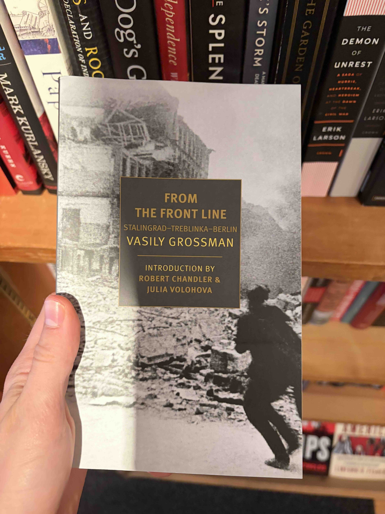

Friends, excuse my delay in updating the blog. My thoughts have been scattered recently, but I've just now been flushed with a feeling of creativity, exuberance, and irrational hubris, so let me recount my past week.
Lucia, Part III
Between Tuesday and Thursday of last week, I visited Lucia in the City. It was a subdued few days but enjoyable nonetheless. On Tuesday, after I arrived, we ate lunch in Lucia's apartment, chatted for a few hours, and then walked through Gowanus, Windsor Terrace, and Park Slope (unfortunately not seeing Eli or Brad Lander). We got dinner at a fusion Syrian-Korean restaurant and then strolled through Prospect Park.
We then walked toward the train station, and at Grand Army Plaza, sat down on a ledge overlooking Bailey Fountain. I don't know how long we sat there for and I can't remember exactly what we talked about, but we rested for so long that the street lamp above us turned on, the sun set, and it started to get cold. I eventually pushed off the ledge, Lucia followed, I wrapped my hands around her waist, she put her arms around my neck, and we briefly stood there, hips lightly swaying. The details aren't coming to me, but the feeling of that evening is still so imaginable.
After leaving Brooklyn, we went to a jazz bar on the lower east side. The house band played sleepy music, and we sat along the wall of the crowded place, talking and watching everyone around us. Musicians would quickly start conversations with one another, a pair of guys walked by looking for the pool table, and a group of people in their mid-twenties perched in front of us with their phones in the air taking panoramas of the room. To our left and in the center of the room, an elderly couple danced throughout the evening.
The next two days, Lucia and I spent in the orbit of her apartment. She had to pack for her trip in China, so we lounged in her room while she did so, me occasionally distracting her. On Wednesday afternoon, we ate lunch in Lucia's apartments, joined by one of her close friends.1 Wednesday evening, we went to a Cuban diner near Chelsea and then walked up the Highline. Thursday morning and afternoon, Lucia spent packing—again, with me occasionally distracting her. I went with her to JFK.
We also labled our relationship.
Jobs
I unfortunately did not get the survey research gig. They're going with an "internal" candidate for an entry level position. Confused but not begrudged.
I am now once again applying for jobs, and my irrational exuberance stems in part from a momentary overconfidence I'm feeling about my job prospects. I look at listings on LinkedIn—program and research assistant at the Social Science Research Council, yes, please—and I get excited, thinking myself qualified. I've also started to use the Crush Calculator in some job applications, too. Crazy, yes. Does it make me look more qualified for certain positions? Perhaps not.
Currently still deciding on whether to actually go cross country. Tight on money, gas prices still high, campsites booked, could travel before going into a PhD program when I hopefully have more savings.
Other Updates
I figured out a workflow that would work for making this blog a collective blog, if people are interested.
I would be superduper excited to call this week at any point, if someone's interested.2
I finished reading Just and Unjust Wars and am now reading Governing the World: The History of an Idea, 1815 to the Present. I got a Vasily Grossman book, too, that I'm excited to get into.
